Este manual foi desenvolvido para auxiliar o usuário na utilização do Sistema Family Music System. O objetivo é levar ao leitor as bases para uma boa utilização do sistema, apresentando de forma gradativa e com uma linguagem didática os diversos módulos do sistema.
Em virtude da evolução de processos internos, a implantação de um novo sistema gera a necessidade de readaptação dos métodos de trabalho. É necessário ganhar produtividade e aproveitar as possibilidades e ferramentas da computação. Nesse sentido, o manual permitirá que você descubra os métodos para trabalhar de forma mais rápida, confiante e eficiente, utilizando os vários recursos oferecidos pelo Sistema Music Family School.
Em cada módulo será abordado uma breve apresentação conceitual e com a utilização de exemplos cadastrados passo a passo no próprio sistema. Além disso, serão apresentadas as imagens das telas que facilitarão a visualização e o entendimento por parte do usuário.
Este é um material oferecido pela FMS ao usuário. Esperamos que você manipule o sistema de maneira eficiente e tire amplo proveito de todas as facilidades que a automatização de procedimentos proporciona.
Bom proveito!
Índice:
- 1. Navegação
- 1.1 Acesso ao sistema
- 1.2 Acesso ao menu geral
- 1.3 Botões e funcionalidades
- 2. Funcionalidades
- 2.1 cadastro
- 2.2 busca/filtro
- 2.3 edição
- 2.4 exclusão
- 3. Configurações
1. Navegação:
A navegação visa proporcionar ao usuário um melhor entendimento dos procedimentos básicos encontrados no sistema. Podemos citar como tais procedimentos o acesso ao sistema, o acesso ao menu geral, e os botões utilizados nos módulos, que serão apresentados a seguir:
1.1 Acesso ao sistema
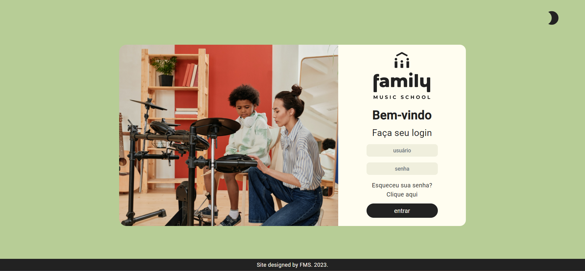O acesso ao sistema é realizado através do CPF e senha disponibilizada pelo Administrador. Caso o usuário tenha esquecido a senha basta clicar em recuperar senha e a tela de recuperação abrirá. Confira os passos para recuperar a senha.
1.2 Acesso ao menu geral
1.3 Botões e funcionalidades
1.3.1 Botão configurações
Exibe configurações do sistema sendo: Funcionalidades fixas e Funcionalidades de listagens. Confira a seguir:
Funcionalidades Fixas
| Botão | Função | |
|---|---|---|
| Cabeçalho | ||
| 1 | 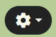 | Abre as configurações e recursos do sistema. |
| 2 | Troca do tema claro para o escuro. | |
| 3 | Acesso para o perfil e para sair do sistema. | |
| Side Bar | ||
| 1 |
|
|
| 2 | Botões para editar e excluir itens da tabela. | |
Funcionalidades de Listagens
| Botão | Função | |
|---|---|---|
| Cabeçalho | ||
| 1 |  |
Abre o modal de criação de novo (alunos, professores, salas e agenda). |
| 2 |  |
Abre o modal de filtragem de dados. |
| 3 | 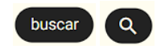 | Busca o argumento digitado na barra de pesquisa. |
| 4 | 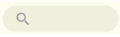 | Local onde um o argumento é digitado para ir para a busca. |
| Tabela | ||
| 1 | 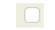 | Utilizado para marcar diversas linhas da tela simultaneamente. |
| 2 | Botões para editar e excluir itens da tabela. | |
2. Funcionalidades:
2.1 Cadastro
Para a realização do cadastro é necessário acrescentar as informações solicitadas nos campos a seguir e por fim clicar em “salvar”:
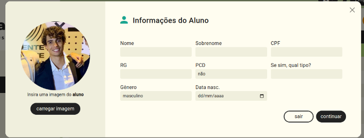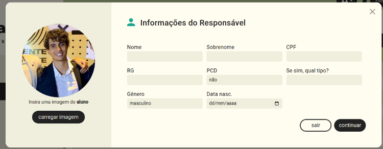
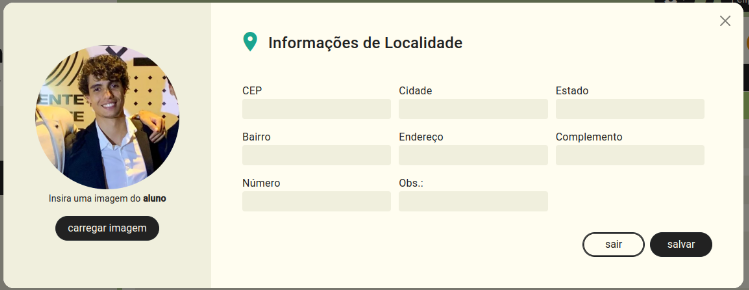
Para garantir que esse cadastro foi realizado, a seguinte mensagem aparecerá:
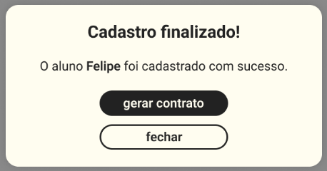2.2 Busca/Filtro
O filtro agrupa para o administrador os alunos ou professores cadastrados no sistema seguindo os parâmetros que podem ser selecionados como: gênero, idade, período do cadastro e data de nascimento. A busca garante o encontro do aluno desejado com agilidade, permitindo que o administrador veja suas informações pessoais cadastradas anteriormente.
.png) 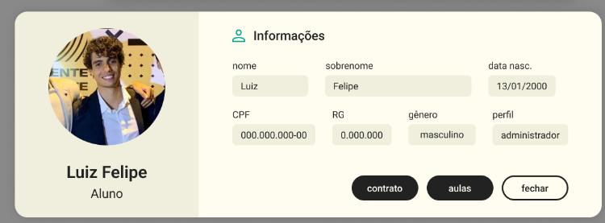
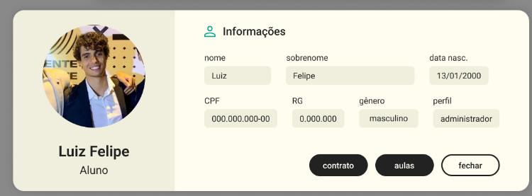
2.3 Edição
A edição permite que o administrador altere informações referentes aos perfis de alunos e professores cadastrados no sistema. Dessa forma, aparecerá novamente o campo de alterações dos dados pessoais, como mostrado em 2.1, e a seguir uma tela de confirmação de edição:
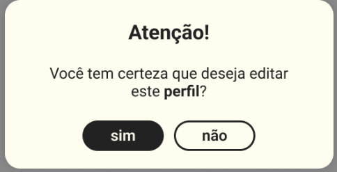2.4 Exclusão
A exclusão de um usuário é realizada selecionando na listagem o usuário desejado e clicando no botão de excluir usuário. Para que a operação seja finalizada, uma mensagem de confirmação como a de 2.3 será mostrada e a seguir a confirmação de exclusão.
3. Configurações:
A aba de configuração contém informações, ferramentas e recursos da aplicação, sendo mostrada da seguinte forma:
- Contrato: exibe as informações de contrato;
- Privacidade: exibe os termos de privacidade da aplicação;
- Recursos: exibe os recursos do sistema;
- Ajuda: exibe o manual do sistema;
- Sobre: exibe as informações sobre o sistema;